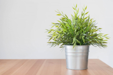

Интернет комнатных растений "Зелённый Пассажир"
Вместе с нами растёт жизнь
-
Сциндапсус
 Skindapsus
Skindapsus
Сциндапсус - это экзотическое растение с привлекательными листьями и уникальным внешним видом. Его листья обычно круглые и мясистые, а также часто имеют интересные узоры и цветовую гамму, которая может варьироваться от ярко-зеленой до более необычных оттенков.
Полив: УмеренныйСолнце: Рассеянное -
Лавр
 LaurusЛавр обыкновенный (Laurus nobilis), также известный как лавровое дерево или лавровый куст, - это вечнозеленое растение, широко известное своими ароматными листьями, которые используются в кулинарии. Лавр произрастает в южных регионах Европы и Средиземноморья. Его листья имеют насыщенный аромат и используются для придания вкуса различным блюдам, таким как супы, соусы и маринады. Кроме того, лавровое дерево имеет декоративное значение и может вырастать в виде кустарника или небольшого дерева.
Полив: УмеренныйСолнце: Яркое -
Бамбук
BambusaБамбук (Bambusa) - это красивое и быстрорастущее растение, известное своими высокими стеблями, которые называются колоссами. Это растение преимущественно встречается в тропических и субтропических регионах и является важным источником строительного и декоративного материала.
Полив: РедкоСолнце: Яркое -
Драцена
BambusaБамбук (Bambusa) - это красивое и быстрорастущее растение, известное своими высокими стеблями, которые называются колоссами. Это растение преимущественно встречается в тропических и субтропических регионах и является важным источником строительного и декоративного материала.
Полив: РедкоСолнце: Яркое -
Бамбук
BambusaБамбук (Bambusa) - это красивое и быстрорастущее растение, известное своими высокими стеблями, которые называются колоссами. Это растение преимущественно встречается в тропических и субтропических регионах и является важным источником строительного и декоративного материала.
Полив: РедкоСолнце: Яркое -
Бамбук
BambusaБамбук (Bambusa) - это красивое и быстрорастущее растение, известное своими высокими стеблями, которые называются колоссами. Это растение преимущественно встречается в тропических и субтропических регионах и является важным источником строительного и декоративного материала.
Полив: РедкоСолнце: Яркое